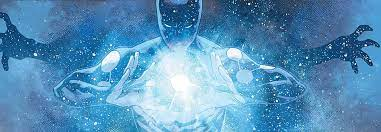

Cosmic Spiderman
Spider-Man se convirtió en el huésped del Uni-Poder cuando un experimento fallido trajo la Fuerza Enigma a la Tierra una vez más y entro en el cuerpo de Peter Parker. Esto hizo que Spider-Man, empoderado por el Uni-Poder, lograra superar amenazas tales como Graviton, Hulk, Magneto y el Tri-Centinela, villanos que Spider-Man nunca podría haber derrotado sin la Fuerza Enigma.Posteriormente, Spider-Man Cósmico entro en contacto con sus homólogos alternativos del multiverso y se enteró de la Gran Cacería iniciada por los Herederos. Sabiendo que estos cazadores totémicos no se atreverían a enfrentar a alguien con su poder, convirtió su realidad en un refugio para otros Spider-Men cazados por los Herederos.
Luego se reunió con el Spider-Man de la Tierra-616, quien le preguntó por qué no usaba sus grandes poderes para acabar con los Herederos de una vez por todas. Spider-Man Cósmico le respondió que la Fuerza Enigma estaba ligada a su propia dimensión y en caso de que dejaba su realidad, él perdería su conexión con el Uni-Poder, convirtiéndolo en un Spider-Man normal como el resto; pero si la situación lo ameritaba, se uniría a la batalla así esto involucrara luchar sin sus poderes cósmicos.
Eventualmente Los Herederos llegaron a Tierra-13, más precisamente Solus acompañado de sus hijos Morlun y Jennix. Con sus homólogos arácnidos en riesgo inminente, Spider-Man Cósmico entro en acción y lanzo un devastador ataque contra los Herederos, que logro destruir a Jennix. No obstante, Solus logro salir ileso de su arremetida y lo ataco frontalmente sorprendiendo a Peter, quien no daba fe de que alguien pudiera combatirlo en igualdad de condiciones teniendo el poder del universo en su interior, al final Solus le explica que la Fuerza Enigma es solo energía vital pura y drena su esencia vital, logrando de esta forma asesinarlo.